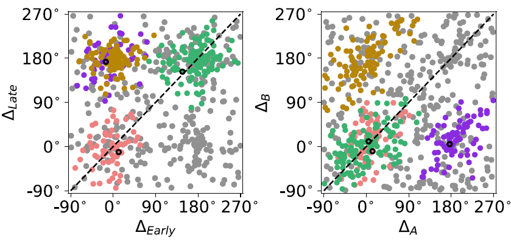

Example: Unsupervised clustering using DBSCAN
I was given the LPFC neural activity data collected from macaques in a decision-making task (Yim et. al., 2019).
We wanted to know how the activity of those neurons changed during task and whether some neurons responded in a similar manner.
We had developed a minimal computational model that could "perform" the task as the animals did.
We determined the essential features based on the model and extracted the four features from each LPFC neuron.
Each neuron can be represented by one point in the 4D feature space.

Do they form clusters? They seem to. Do all neurons belong to a certain cluster? Maybe not. What clustering method shall we use? The k-means clustering may not suit our purpose because we want to exclude outliers. In this case, we used density-based spatial clustering of applications with noise (DBSCAN). It is a density-based clustering non-parametric algorithm: given a set of points in some space, it groups together points that are closely packed together, marking as outliers points that lie alone in low-density regions (see Wikipedia). DBSCAN requires two parameters: the radius of a neighborhood with respect to some point (eps) and the minimum number of points required to form a dense region (minPts).
Scikit-learn, a machine learning library for the Python programming language, has an implementation of DBSCAN.
from sklearn.cluster import DBSCAN
db = DBSCAN(eps=eps, min_samples=minPts).fit(feature_data)
In this data set, the DBSCAN algorithm found 4 clusters. One can try different values of eps and minPts to see how the results differ.
